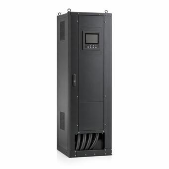

Uptime Institute Tiers I–IV: What They Actually Define
Four levels describing what a facility can survive and what it can maintain without going down. The word is a trademark and the classification is an award, which is why most things called Tier III are not, and the availability percentages everyone quotes are not part of the standard at all.

Key takeaways
- Tier I and II are about redundant capacity. Tier III and IV are about distribution paths, which is the real dividing line.
- Tier III means concurrently maintainable: anything can be taken out of service for planned work without affecting IT.
- Tier IV means fault tolerant: any single unplanned failure is survived, which additionally requires continuous cooling.
- Tier is an Uptime Institute trademark and an awarded certification. A design described as Tier III without an award is a self-assessment.
On this page · 7 sections
The four levels
The classification describes topology — what the power and cooling systems are made of and how they are connected — rather than equipment quality or operational practice. Each level includes everything below it.
| Tier | What it defines |
|---|---|
| I — Basic Capacity | A single path for power and cooling, no redundant capacity components. Planned work on almost anything requires shutting the IT load down, and an unplanned failure does the same. |
| II — Redundant Capacity | Redundant capacity components — a spare generator, a spare chiller — but still a single distribution path. A component can fail without taking the load down; work on the path still cannot be done live. |
| III — Concurrently Maintainable | Every capacity component and every distribution path element can be removed from service on a planned basis without affecting IT. In practice that means multiple independent distribution paths, with dual-powered IT equipment. |
| IV — Fault Tolerant | Any single unplanned failure of any capacity component or distribution element is survived with no IT impact, automatically. Adds continuous cooling and physical separation of redundant systems. |
The step that matters is between II and III, and it is not about having more equipment. Tier II adds spare components; Tier III adds paths. A site can have N+1 on every machine in the building and still be Tier II if there is one way for the power to get from those machines to the floor.
Maintainable against tolerant
Tier III and Tier IV answer two different questions, and conflating them is the most common technical error in the subject.
Concurrently maintainable is about planned work. Can you isolate a UPS, a switchboard, a distribution path or a chiller, work on it, and put it back, with the IT load running throughout? That is a question about valves, breakers, isolation points and whether the second path can carry the whole load while the first is open.
Fault tolerant is about the unplanned. When something fails with no warning and nobody is standing there, does the load ride through without human action? That is a question about automatic response, and it is a harder one. A Tier III site may well survive a failure — but it is not required to, and may need an operator to act.
Tier IV also brings two requirements Tier III does not. Continuous cooling means the thermal environment is maintained through a utility outage and generator start, which usually means chilled water storage or a flywheel on the cooling plant, because IT equipment at high density overheats in minutes. And compartmentalisation, meaning the redundant systems are physically separated so a single event — a fire, a flood, a failure that propagates — cannot take both.
Certification is not a design claim
Tier, Tier Standard and the Tier Classification System are trademarks of Uptime Institute, and the classification is awarded rather than self-declared. There are three distinct awards, and they are not interchangeable:
- Tier Certification of Design Documents — the drawings were reviewed and meet the topology.
- Tier Certification of Constructed Facility — the building as built was inspected and demonstrated, which is a different and much harder thing than the drawings.
- Tier Certification of Operational Sustainability — the staffing, maintenance and operating practice were assessed.
So "Tier III" in a sales document can mean a certified constructed facility, a certified set of drawings for a building that was then value-engineered, or nothing more than somebody's opinion of their own topology. The question worth asking is which award, issued when, and for this building. Design certification without construction certification is common and is a reasonable thing to hold — it just is not the same claim.
The honest way to describe an uncertified facility is by what it does: concurrently maintainable power with dual paths and N+1 cooling says more than a tier number anyway, and does not borrow a trademark.
The availability percentages
Nearly every summary of this subject carries a table of availability figures — 99.671, 99.741, 99.982 and 99.995 percent, mapped to the four tiers. Those numbers are not in the current Tier Standard, and Uptime Institute has distanced itself from them.
They originated in much older material and spread because they are concrete and easy to tabulate. The problem is that topology does not determine availability: a Tier IV facility operated badly will beat a Tier II one and lose to a well-run Tier III, and the standard says nothing about how many minutes a year any of them will be down. The Operational Sustainability certification exists precisely because topology alone does not predict outcomes.
If someone quotes those percentages at you as a specification, they are quoting a decades-old secondary source. What a tier tells you is what the facility can survive and what it can maintain, not how often it will fail.
What the tiers do not cover
The classification is about power and cooling topology for the critical environment. Several things people expect to find in it are not there.
It says nothing about physical security, network redundancy or carrier diversity, nothing about geographic risk, and nothing about whether the IT architecture can tolerate losing the site — which, for most modern workloads, matters more than the facility tier. Nor does it grade equipment: a Tier IV topology built from poorly maintained equipment is still Tier IV topology.
It also does not map onto the redundancy notation people use alongside it. N+1 and 2N describe how much spare capacity a system has; the tiers describe what the whole facility can do. N+1 vs 2N covers that distinction, and the two vocabularies are routinely mixed in the same sentence to no good effect.
Common mistakes
- Equating N+1 with Tier III. Redundant capacity is Tier II. Tier III needs redundant distribution paths that can each be isolated.
- Quoting the availability percentages as a requirement. They are not in the standard and never described a guarantee.
- Treating design certification as construction certification. Different awards, different evidence, and the gap between them is where value engineering lives.
- Using "Tier 3" as a generic adjective. It is a trademark and an award; writing "concurrently maintainable" costs two more words and is defensible.
- Forgetting continuous cooling at Tier IV. It is a requirement, it is expensive, and it is the item most often missing from a design that otherwise looks fault tolerant.
Frequently asked questions
What is the difference between Tier III and Tier IV?
Tier III is concurrently maintainable: every capacity component and distribution path element can be removed from service for planned work without affecting the IT load. Tier IV is fault tolerant: any single unplanned failure is survived automatically, with no human action. Tier IV additionally requires continuous cooling through a utility outage and physical separation of the redundant systems.
Does N+1 redundancy make a data center Tier III?
No. N+1 is redundant capacity, which is Tier II. Tier III requires redundant distribution paths as well, each able to be isolated for planned work while the other carries the load, which in practice means dual-powered IT equipment. A facility can have N+1 on every machine and still be Tier II if there is only one path to the floor.
Are the Tier availability percentages real?
The figures of 99.671, 99.741, 99.982 and 99.995 percent are widely quoted but are not part of the current Tier Standard, and Uptime Institute has distanced itself from them. Topology does not determine availability; operations largely do, which is why a separate Operational Sustainability certification exists. Treat the percentages as a decades-old secondary source rather than a specification.
Can a data center call itself Tier III without certification?
Tier and the Tier Classification System are Uptime Institute trademarks and the classification is awarded, so an uncertified claim is a self-assessment. There are also three separate awards — design documents, constructed facility, and operational sustainability — which are not interchangeable. Ask which award, issued when, and for which building.
Next steps
The backup power reference covers the equipment these topologies are built from, and N+1 vs 2N covers the redundancy vocabulary used alongside the tiers.
Run the numbers
- Generator Runtime CalculatorOn-site fuel against consumption at real load.
- BESS Sizing CalculatorUsable and nameplate kWh for a ride-through requirement.
Cite or link to this guide
Free to quote with attribution. Suggested citation: Voltfield Editorial Team, “Uptime Institute Tiers I–IV: What They Actually Define,” Voltfield, updated November 3, 2026. https://voltfield.org/guide-uptime-institute-tiers.html
Get new guides by email
One short email when a new guide or calculator is published, at most once a month. Your address is used for nothing else.